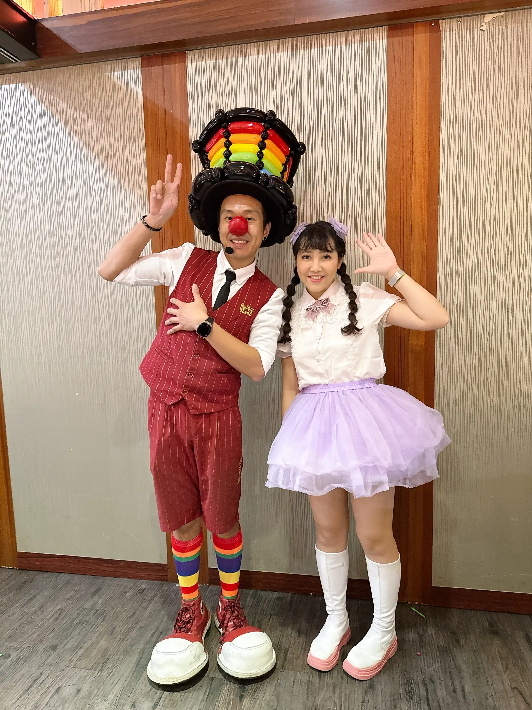
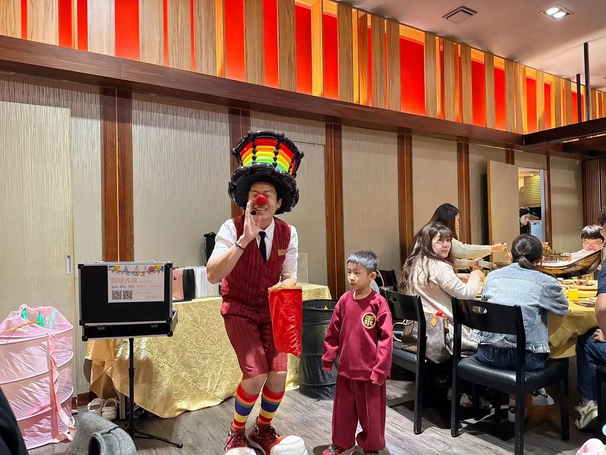
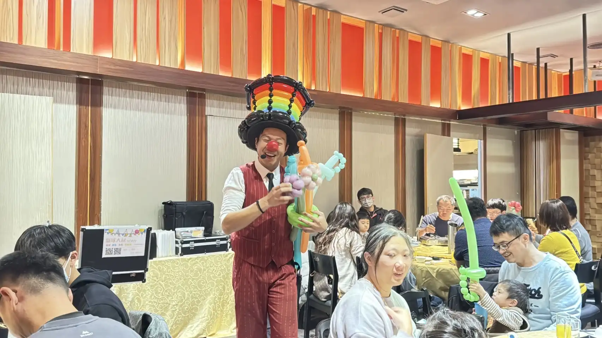
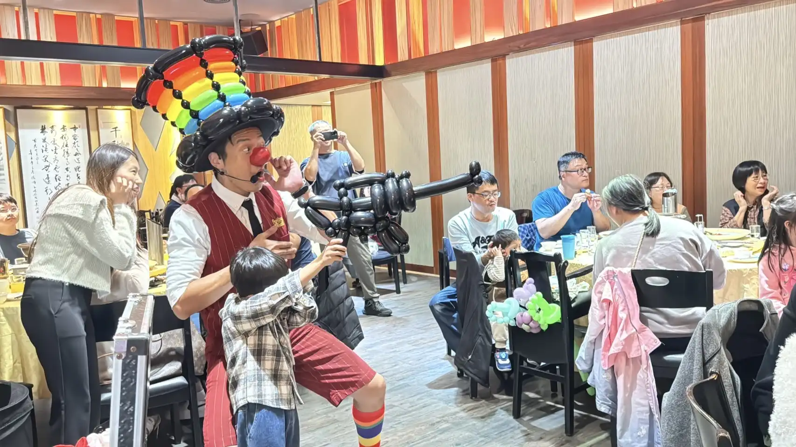
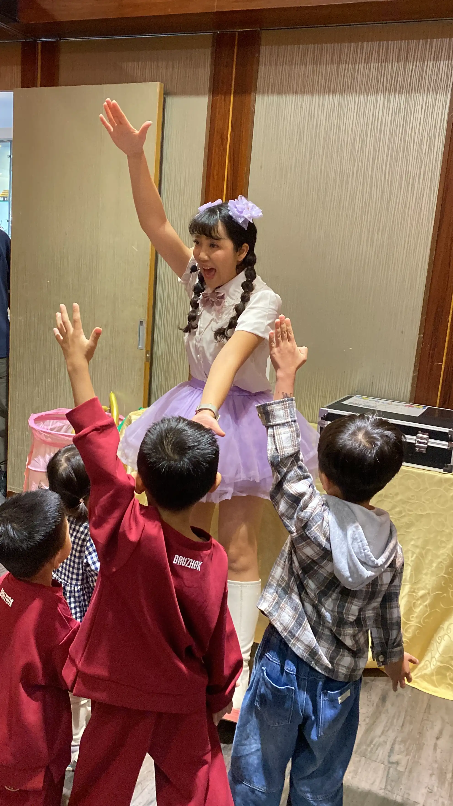
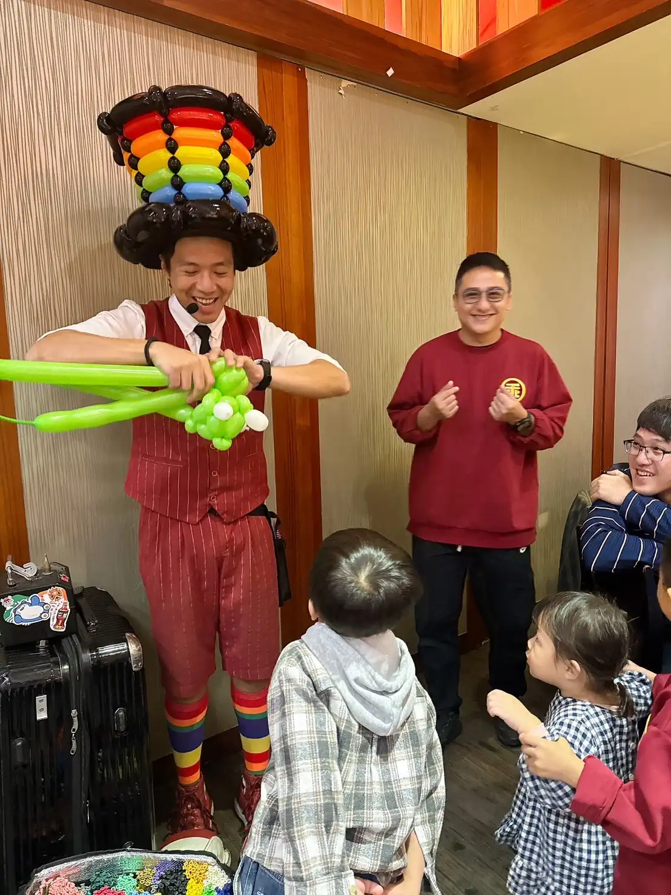

【南投尾牙回顧】草屯小春親子秀：氣球大叔魔術 × 唱跳主持姐姐，抽獎表演 2 小時全攻略！
專業抽獎控場 × 120 分鐘不斷電規劃，打造員工安心吃飯、小孩開心放電的雙贏尾牙
📍 活動地點：南投草屯 小春Koharu 日本料理創始店
回想起這場在南投草屯舉辦的尾牙親子秀，我到現在還記得現場那股「一秒升溫」的歡樂氛圍！企業在辦尾牙或家庭日時，最常遇到的挑戰就是：孩子一坐不住，家長也很難真正放鬆、好好吃飯聊天；且抽獎環節如果節奏沒抓好，現場很容易出現空檔、氣氛降溫。為了讓每位夥伴都能盡情享受年終聚餐，大叔我再次受邀到場演出，並與專業主持姐姐攜手，將現場節奏拿捏得既熱鬧又溫馨。
這次大叔我與活力的唱跳姐姐聯手，打造了一套長達 120 分鐘（2 小時） 的不斷電快樂方案：由唱跳姐姐負責現場活動主持與尾牙抽獎控場，搭配30 分鐘互動魔術、30 分鐘親子唱跳表演，以及最後壓軸的 60 分鐘造型氣球手折。從開場引導到用餐尾聲，孩子有得看、有得玩，也更願意回到座位陪爸媽用餐；家長則能真正放鬆，安心享受這頓豐盛的年終饗宴。

專業主持控場：一場順暢的尾牙，主持就是串起節奏的關鍵
在尾牙餐敘中，主持人的角色至關重要。唱跳姐姐不僅能帶動孩子，更能透過專業主持功力，流暢地銜接用餐與全場最受期待的「抽獎環節」。在姐姐的引導下，頒獎流程清楚、氣氛熱烈，掌聲與歡呼自然一波接一波，完全避免了摸彩時可能出現的冷場尷尬。
緊接著進入 30 分鐘的互動魔術環節。我最喜歡的，就是看到孩子從原本陌生的「先觀察」，逐漸被出其不意的笑點與互動吸引，最後變成積極「主動舉手」。這種心理上的轉變，會讓現場節奏自然穩下來：孩子專心看、家長安心吃，整體氛圍就會很順暢。魔術環節成功吸引了全場 4 到 12 歲的孩子們聚精會神，大幅改善了孩子坐不住、容易分心的狀況，讓家長能同步在席間放心享受美食。


創意氣球步槍體驗：讓互動從「看表演」變成「一起加入」
當魔術把氣氛成功帶起來，接下來就需要更動態的方式，讓孩子把能量「放對地方」。在大叔與主持姐姐的引導下，我帶出了特製的氣球步槍，讓孩子們體驗「瞄準發射」的目標挑戰。現場掌聲與歡呼聲幾乎沒有停過，連大人都忍不住一起加入，紛紛拿起手機捕捉自家孩子露出燦爛笑容的瞬間。這種結合體感與視覺的設計，成功打破了表演者與觀眾的界線，讓全場賓客都沉浸在共同闖關的驚喜感中。

活力親子唱跳：徹底釋放能量，讓孩子在快樂中放電
接下來由姐姐發揮主持與表演的雙重魅力，帶領孩子們起立律動。在這 30 分鐘的唱跳時段 內，透過活潑的節奏與簡單的肢體律動，讓原本坐太久的孩子們能徹底「放電」。唱跳姐姐的親和力讓每個孩子都大方地舞動身體，整個小春日本料理的包廂彷彿變成了一個充滿活力的慶典現場，成功地將現場能量轉化為正向的快樂，也為接下來的造型氣球時段做了最棒的鋪陳。

職人手折氣球：長達 60 分鐘的藝術獻禮，滿足每一位孩子的心願
最後壓軸則是長達 60 分鐘造型氣球手折。大叔展現職人快手實力，將氣球變換成孩子們指定、最想要的各種造型：從帥氣的配劍、可愛的貴賓狗到精緻的花卉。在這一個小時內，我們確保每位孩子都能心滿意足地領到專屬禮物。看著每位孩子都能一一拿到自己指定的造型，帶著最燦爛的笑容回家，這就是大叔我最欣慰的時刻。大叔與主持姐姐合作無間，讓這場包含抽獎與表演的 120 分鐘尾牙圓滿落幕。

🎈 正在規劃南投草屯地區的尾牙活動嗎？
如果您也希望為您的活動創造像現場一樣「一秒升溫」的笑聲，氣球大叔 Sony 團隊是您的首選！我們提供 2 小時完整不斷電方案，場地需求也很簡單：一個小表演區即可。音響設備可由我們協助準備，餐廳包廂／會議室都能配合：
- 專業主持與抽獎控場：掌握全場節奏，精準引導最受期待的摸彩時刻。
- 30 分鐘互動魔術秀：專業破冰，穩定現場觀賞節奏，讓孩子不再分心。
- 30 分鐘親子唱跳表演：活力帶動，釋放孩子過剩體力，快樂運動。
- 60 分鐘造型氣球手折：客製化精緻藝術，確保每個孩子都心滿意足。
我們用專業流程設計，讓福委會最在意的三件事一次到位：孩子開心、家長放心、抽獎節奏好掌控。